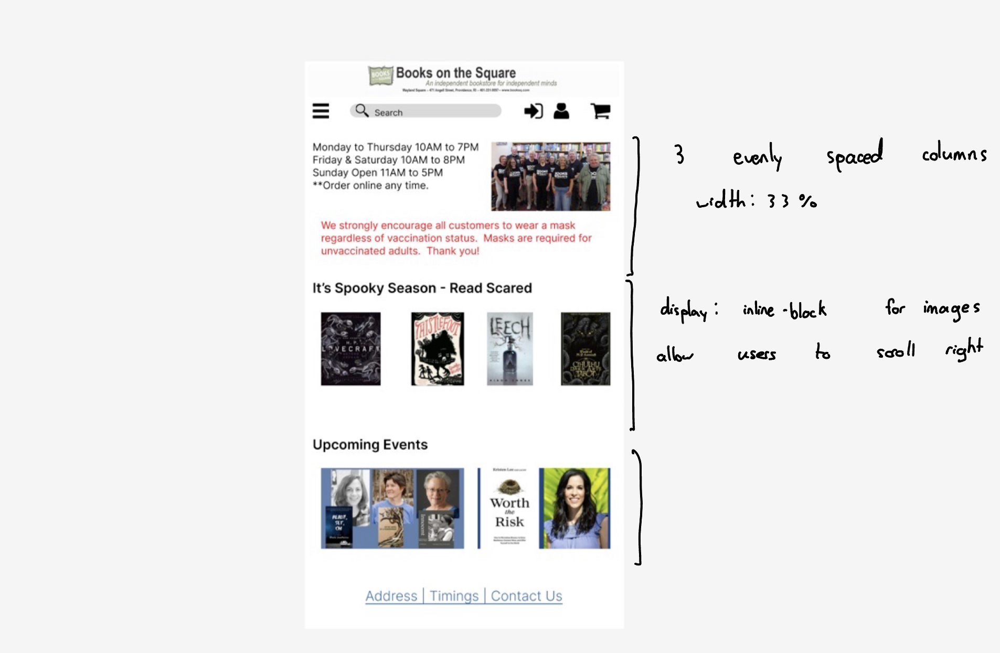
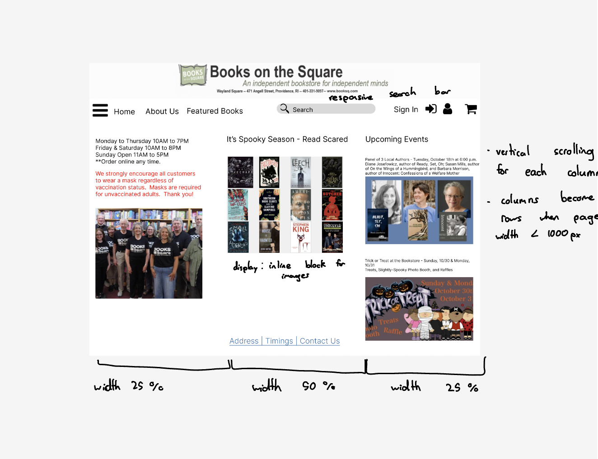
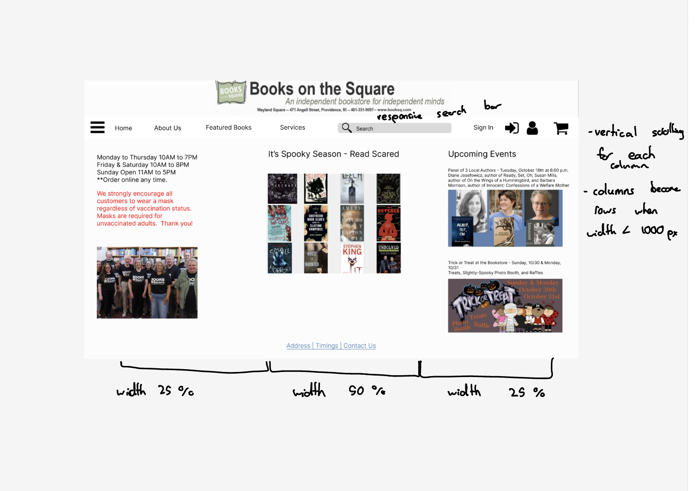

Responsive Redesign Assignment
Overview
The goal of this assignment is to practice and replicate the workflow of redesigning a simple website. We will analyze and identify flaws in an existing interface, create low-fidelity and high-fidelity prototypes for various screen sizes, and finally build a responsive website based on these prototypes.
Identifying Usability Problems
The Website
My chosen interface can be found here. I chose this website because there is a lot of room for improvement to make it more usable and accessable. In particular, the layout can be improved to establish a visual hierarchy and reading path to allow a user to better navigate the site and find relative information.

Problems
Some problems with the interface are:
- The element groupings do not make sense. Relevant information is not really grouped together and it is difficult to find what you are looking for on this site. For example, there should be a section for events rather than having these events displayed haphazardly on the homepage.
- There is no established hierarchy in the layout that lets the user know where the most relevant information on the page can be found.
- There is no reading path for the user on this page, so one thing that can be improved is establishing a reading path and having action buttons located at the end of the scan patterns to improve efficiency of use.
- The website is not tailored for efficient use. Popular action items such as purchasing or searching for a specific books are hard to find on the page.
- This page does not follow aesthetic or minimal design. There is a lot of extra information displayed on the homepage that could be compartmentalized. The ammount of text on the page in general is overwhelming.
- The website does not provide help and documentation for the user to figure out how to navigate the content of the site.
Accessibility
I used WebAIM WAVE to detect
possible accessibility problems in the interface. A lot of the problems that were flagged were areas of low contrast on the
page, where there was olive green text on an off-white background.
 I agree with this being an area with very low contrast. The shade is light for the background, and someone
who is visualy impaired could have a hard time being able to see the text on this area. Other than the low contrast
error there were other warnings about suspicious alternative text, but most of these warnings referred to the titles
of books so can be ignored.
I agree with this being an area with very low contrast. The shade is light for the background, and someone
who is visualy impaired could have a hard time being able to see the text on this area. Other than the low contrast
error there were other warnings about suspicious alternative text, but most of these warnings referred to the titles
of books so can be ignored.
Low-fidelity Wireframing
Below I have included the low-fidelity wireframes that will be used for the redesign. Each wireframe represents a different screen size: website, tablet, and phone. Below I have also included annotations about the changes made and how they address the previously mentioned usability problems.
Website
Tablet
Phone
Visual Design Style Guide
Link to the Visual Design Style Guide can be found here . The Visual Design Style Guide displays the main colors, typography, and reusable components' different states.

High-Fidelity Prototyping
Link to the High-Fidelity Prototypes completed in Figma can be found here. Included are 3 different prototypes, one for each screen size (mobile, tablet, and desktop). With each prototype key design elements that make the website responsive have been annotated. The most important design elements are the 3 primary columns in the body of the website that become rows when the screen size is made smaller, in the phone or table version. Additionally, each column allows for horizontal/vertical scrolling to be able to view the elements in the columns.
  Responsive Redesign
Here is the link to the final redesign of the hompage of our chosen website. This redesign follows the layout and style choices outlined in our low-fidelity wireframe and high-fidelity prototypes. It addresses the problems identified with the layout and design of our original webpage by improving the organization of elements on the page and making it easy for users to find common functions through the addition of a navigation bar. Shown below are screenshots of the webpage being tested for responsiveness at each screen size we created prototypes for.